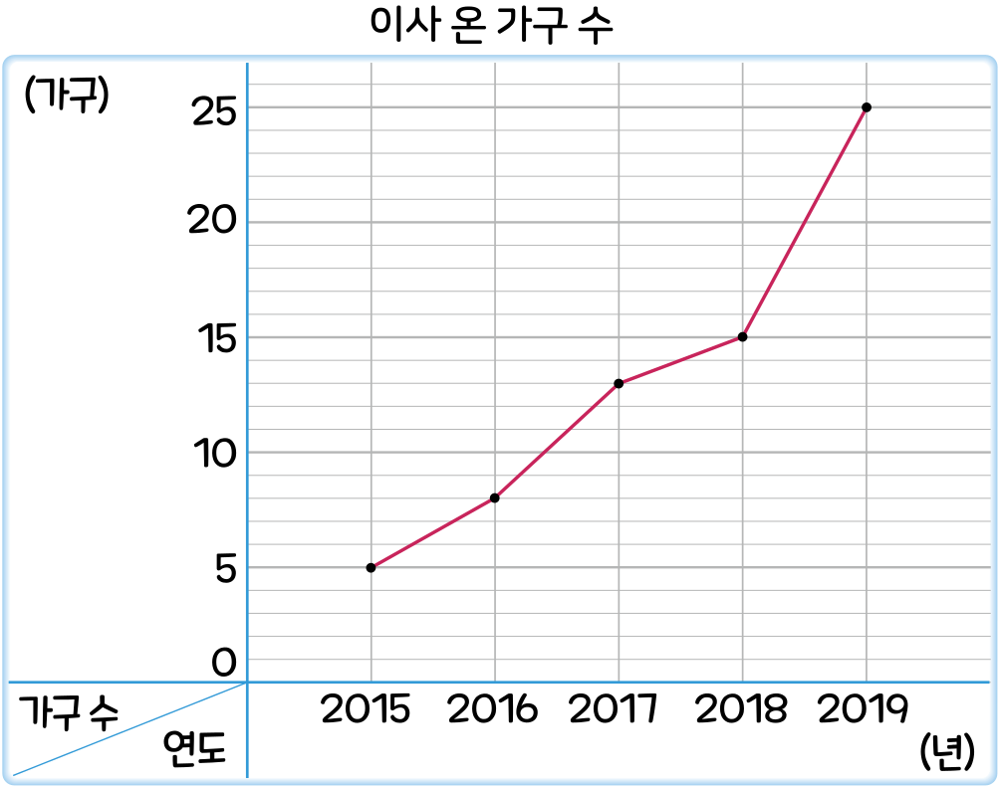

5. 자료와 꺾은선그래프
꺾은선그래프로 자료를 해석해 볼까요
수학
116~117
쪽
수학 익힘
84
쪽
[
~
]
어느 마을의 이사 온 가구 수를 조사하여 나타낸 꺾은선그래프입니다. 물음에 답해 보세요.

이사 온 가구 수는 대체로 어떻게 변하고 있는지 알아보려고 합니다. 알맞은 말에
표 하세요.
이사 온 가구 수는 (
늘어나고
,
줄어들고
) 있습니다.
꺾은선이 오른쪽 위로 올라가고 있습니다.